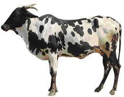
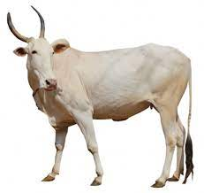
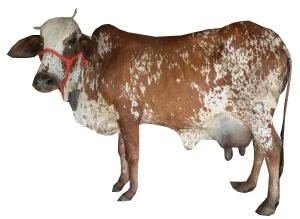
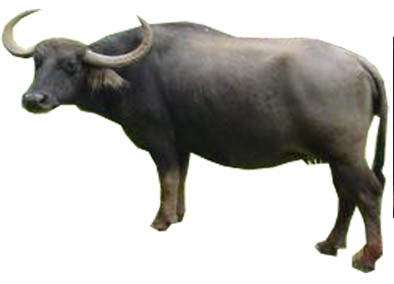
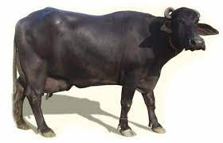
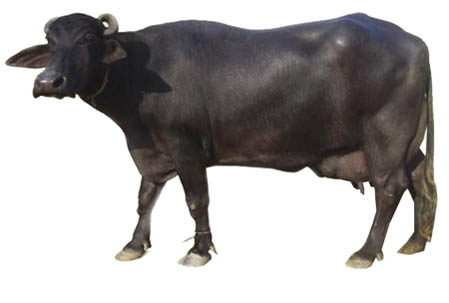

Cattle Breeds:

- Dangi: Dangi is an indigenous cattle breed of India. It originated in the hilly tracts of Nasik and Ahmednagar districts in the state of Maharashtra.
The breed is medium to large in body size. They are a very good draught breed and known for their adaptability to heavy rainfall areas.
The skin of this breed secretes an oil element that enables them to tolerate heavy rains.

- Khillari: The Khillari cattle breed is native to Satara, Kolhapur and Sangli regions in Maharashtra. The breed is well adapted to the area's
tropical and drought-prone conditions. They are favoured by the local farming community due to their ability to handle the hardships of farming. The breed is in decline,
mostly due to low milk yield, which offers an alternate income stream.

- Rathi: Rathi, also synonymous with its variant Rath, is a breed of cattle indigenous to India.
It originated in the region of the state of Rajasthan consisting of Bikaner, Ganganagar and Hanumangarh districts.
It is an important dual purpose cattle breed of India known for both its milking and draught prowess.
The cattle is locally known to have two variants, Rathi is a draft breed while Rath is a pure milch variant.
Buffalo Breeds:

- Nagpuri: The Nagpuri buffalo is a versatile breed of the Maharashtra and stands better amongst the breeds of buffaloes which combine the milk and drought qualities
in a better proportion in adverse climatic conditions. It is a River type buffalo and a central Indian Breed. The animals are maintained in semi-intensive management system.

- Murrah: The Murrah buffalo is a breed of water buffalo mainly kept for milk production. in other countries, such as Italy, Bulgaria, and Egypt. Murrahs sell for a high price.
Among Indian buffalo breeds, Murrah is noted to have the highest milk yield. Murrah buffaloes are jet black in colour, sometimes with white markings on the face or legs.

- Surti: The Surti buffalo is of medium size and docile temperament. The breed has got a fairly broad and long head with a convex shape at the top in between horns. Horns are sickle-shaped and flat which grow in a downward & backward direction and then upwards at the tip forming a hook.
The skin is black or brown. Surti breed has got a unique straight back. Good specimens have two white collars.